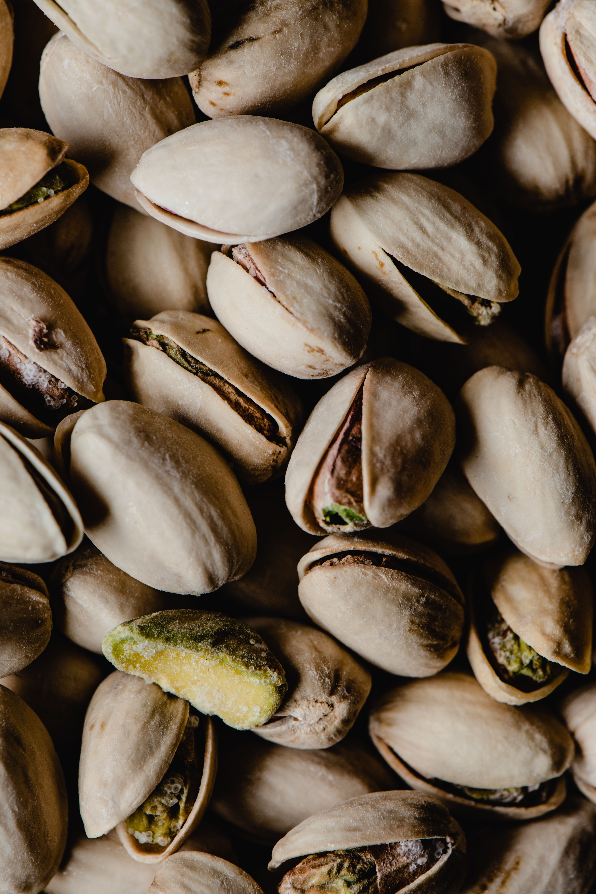

Depuis Thala · Kasserine · Tunisie
Le goût vrai,
racines profondes.
Nous mettons en lumière les richesses agricoles de Thala à travers des produits cultivés avec attention et fierté.

PAR NATURE
Notre histoire
Une terre généreuse, un savoir-faire sincère.
THALA FARM est une initiative locale dédiée à la valorisation des produits agricoles de Thala. Notre démarche est simple : respecter la terre, prendre soin de chaque récolte et partager le meilleur de notre région.
Des champs jusqu'à votre table, nous défendons une agriculture de proximité, fière de ses racines et tournée vers l'avenir.
Terroir
La richesse de Thala au cœur de nos produits.
Exigence
Une sélection attentive à chaque étape.
Proximité
Un lien direct avec nos clients et partenaires.
La collection THALA FARM
Des produits qui racontent notre région.
Découvrez notre sélection de produits agricoles locaux, présentés avec transparence et passion.

Olives
Des olives cultivées avec soin dans les terres de Thala.
Découvrir le produit →
Ail
Un ail local au caractère généreux et authentique.
Découvrir le produit →
Huile d'olive
Une huile locale issue des oliviers de Thala.
Découvrir le produit →
Pistaches
Des pistaches cultivées dans la région de Thala.
Découvrir le produit →Notre engagement
Du champ à la découverte.
Une attention particulière portée à l'origine, au soin et à la qualité de chaque produit.
Choisir notre terre
Nous valorisons les cultures et les savoir-faire ancrés dans le terroir de Thala.
Prendre le temps
Chaque récolte mérite de l'attention, du soin et une présentation à sa hauteur.
Partager le meilleur
Nous créons un lien simple et direct avec celles et ceux qui aiment le local.
Dans les coulisses
La vie de THALA FARM.
Un aperçu de nos terres, de nos produits et de notre quotidien.


Parlons terroir
Une question ?
Un projet ?
Pour en savoir plus sur nos produits ou échanger avec THALA FARM, écrivez-nous directement.